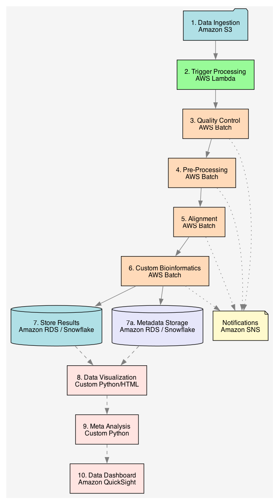

Bioinformatics | Machine Learning | Data Visualization
An experienced data scientist specializing in bioinformatics, machine learning, and signal processing. With a background in biological data analysis, I bring a unique perspective to solving complex problems. I have successfully led projects from conception to implementation, delivering actionable insights from data.
Intuitive visualizations to help understand your data.
The right statistics to answer your questions.
Advanced models to derive actionable insights.
Automated bioinformatic pipelines with custom analyses for any sequencing technology.
Extract information from complex signals.
Analyze sales, customer insights, and operational performance.
Sales Target
Interested in collaborating or hiring me for a project? Feel free to reach out.